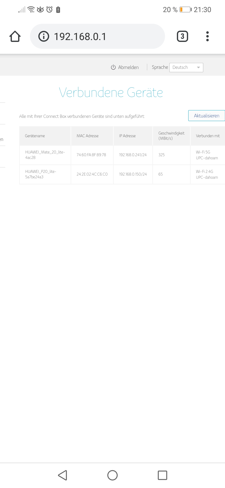

Hallo zusammen. Ich stehe gerade vor einem Rätsel. Mein Internet ist bei gewissen anwendungen/Geräten langsam und bei anderen normal schnell.
Das Problem tritt bei unseren Smartphones auf. (Huawei Mate 20 lite und Huawei p10 lite)
Ich habe bei meinem Mate 20 lite schon mehrere unterschiedliche speed Tests durchgeführt. Immer mindestens 30mbit Download und 8mbit upload. Einzig der magenta speed test mit 50mbit download schlägt da aus der Reihe. Surfen im Browser funktioniert schnell. Mein Chrome ast hat auch keine Probleme (übrigens interessanterweise das einzige Gerät welches sich ins 5ghz WLAN einloggt.
So bald ich jedoch am Handy eine App öffne die Internet braucht oder was im appstore downloaden will... Pustekuchen... Nichts geht.
Spannend ist vl noch:
Wenn ich mich beim Router einlogge springt die downloadrate bei den Handys die ganze Zeit zwischen 1 und 72 MBit hin und her: 
Speedtest:
Mal kurz und knackig was ich schon versucht habe:
1. Neustart von den Geräten und dem Modem.
2. Firewall am Modem kurzzeitig deaktiviert
3. Jeweils ein frequenzband am Modem deaktiviert um ein hin und her springen zu verhindern.
Downloads im appstore funktionieren zwar und sind auch schnell wenn sie mal beginnen. Bräuchte vor kurzem 40s für eine 2mb app wobei 38s vergingen bis der download gestartet ist. Vl würde es bei den Apps auch irgendwann gehen, nur kommt halt ein timeout vorher?
Anfangs hatte ich das problem nur bei meinem handy, mal mehr mal weniger, aber mittlerweile auf beiden und eigentlich dauernd
Tritt es auch in anderen W-Lans auf? z.B. wenn du mit einem der Handys einen Hotspot für das andere öffnest?
Bearbeitet von NTMvor 7 Stunden schrieb NTM:Tritt es auch in anderen W-Lans auf? z.B. wenn du mit einem der Handys einen Hotspot für das andere öffnest?
Kann ich jetzt eigentlich nicht sagen. Hatte aber bis vor kurzem lte Internet von t-mobile. Das war zwar wegen schlechtem Empfangs allgemein langsam, dafür aber konstant.
Hmm... Ich versuch später wlan beim Modem auszuschalten und per LAN den alten lte Router an zu schließen vl bekomme ich dann nen WLAN zustande
So. Hab jetzt meinen alten t-mobile mobile per LAN angeschlossen, sim Karte zur Sicherheit raus und verwende jetzt das WLAN. Mir kommt die Verbindung jetzt schneller vor. Stellt sich die frage: Wie lange.
Die edit sagt nicht lange. Selbes Spiel. Mal schnell, mal langsam. Könnt der ehemalige t-mobile internetschutz da schuld dran sein?
Bearbeitet von Michael K.Der könnte daran schuld sein. Gibt es eigentlich ein Muster bei den Anwendungen?
Mache bitte da einen speedtest:
Am 21.7.2019 um 20:19 schrieb IT-Freak:Der könnte daran schuld sein. Gibt es eigentlich ein Muster bei den Anwendungen?
Mache bitte da einen speedtest:
Habe den ipv6 test jetzt mal gemacht. Allerdings vom Handy aus. Keine Ahnung ob das das Ergebnis verfälscht.
Sorry dass es so lang gedauert hat, aber ich hab ein paar Tage per whatts app mit dem Support verbracht.
Was ist beim Support eigentlich raus gekommen?
Gab es da Tipps für dich?
LG
Christian
Kannst du die Seite six.heise.de aufrufen oder nicht?
Bei mir geht die Seite nicht. ?!
Was steckt da dahinter?
Achso - jetzt ist es klar.
Wegen IP V6......
Ok.... hab ich noch nicht eingerichtet.
Am 25.7.2019 um 12:23 schrieb Christian_E:Was ist beim Support eigentlich raus gekommen?
Gab es da Tipps für dich?
LG
Christian
Ich soll einen anderen Kanal wechseln. Und den T-mobile internetschutz hab ich deaktivieren lassen.
So. Heute geht gar nichts mehr. Kein internet
Gar nicht gut.
Kein Internet mehr per LAN und WLAN oder nur per WLAN?
Langsam denke ich, dass wir das Teil mal komplett reseten lassen sollten...
Hab über das online setup mehrmals neu gestartet. Auch mal kurz vom Netz genommen.
WLAN funktioniert glaub ich sogar. Hab halt kein Internet....
Nen werksreset wär noch möglich. Nur brauch ich dann wieder die Hotline zum einstellen oder?
Nein m.E. ist ein Werksreset immer möglich.
Die Magenta Einstellungen dürften da nicht verloren gehen - kannst das bitte kurz noch mit dem Support absprechen aber dann würde ich einen kompletten Reset mal vorschlagen.
Dann sollte der Router so sein, wie du ihn anfangs bekommen hast.
vor 6 Minuten schrieb Christian_E:Nein m.E. ist ein Werksreset immer möglich.
Die Magenta Einstellungen dürften da nicht verloren gehen - kannst das bitte kurz noch mit dem Support absprechen aber dann würde ich einen kompletten Reset mal vorschlagen.
Dann sollte der Router so sein, wie du ihn anfangs bekommen hast.
Werd das mal versuchen. Die Sache ist halt die. Wirklich funktioniert hat der ab dem 2. 3. Tag nicht mehr. Gab halt nur bei mir Probleme. Deshalb dachte ich es liegt an meinem Handy.
Die anderen Geräte kamen dann bald mal dazu
Gestern per whatts app eine Anfrage geschickt mit der Bitte um rücksetzung des Modems. Internet geht jetzt wieder. Hab allerdings keine Ahnung ob die was gemacht haben oder nicht. Antwort habe ich jedenfalls keine bekommen bisher.
Hab grad auch versucht bei meinem Handy mal den DNS Server zu ändern. Verwende jetzt den von Google. Mal ein oder 2 Tage testen ob es besser wird.
Ansonsten werd ich mal den Techniker von hier in der Gegend zu kontaktieren. Vl hat der eine Idee oder ein anderes Modem zum testen rum kugeln. Wobei ich nicht weiß ob das so einfach geht.
Ja ist ja gut, dass es wieder klappt oder?
Was hackt jetzt oder wie läuft es im Moment?
vor 21 Minuten schrieb Christian_E:Ja ist ja gut, dass es wieder klappt oder?
Was hackt jetzt oder wie läuft es im Moment?
Jetzt im Moment Einwandfrei. Sowohl mit statischer IP und Google DNS Server als auch mit dynamischer IP. Also der DNS Server sollte es nicht sein.
Ein Download im play store startet beinahe augenblicklich.
Laut Support gab es in den letzten Tagen signalschwankungen und ich sollte die Box von allen Kabeln trennen. Na ja. Was der Support sonst noch im Hintergrund gemacht hat werde ich wohl nie erfahren ?
Hmm. Hast du vl ne Ahnung? Wenn ich bei Android auf statische IP gehe um den DNS Server eines Netzwerkes zu ändern. Merkt sich Android den neu eingestellten DNS Server wenn ich zurück wechsel auf dynamisch?
Wenn du wieder auf dynamisch, also auf DHCP umstellt, dann bekommst du auch wieder automatisch einen DNS Server zugewiesen.
Teste einfach mal die manuelle und die automatische Lösung - wäre spannend, wie deine Erfahrungen sind.
Ich glaub eher nicht, dass das eine große Rolle spielt.
War auch in der Vergangenheit unsicher und hab mehrfach auch die statische Lösung mit DNS 8.8.8.8 verwendet.
Manchmal hatte ich das Gefühl, dass der zugewiesene DNS Server nicht stabil ist aber auch bei der Google Lösung gibt es hin und wieder "Downzeiten".
Also perfekt ist es nirgends.
Aktuell lass ich alles wieder vom Magenta Router zuweisen und es klappt recht gut.
LG
Christian
{kind=link}
{kind=link}
{kind=link}
{kind=link}
{kind=link}